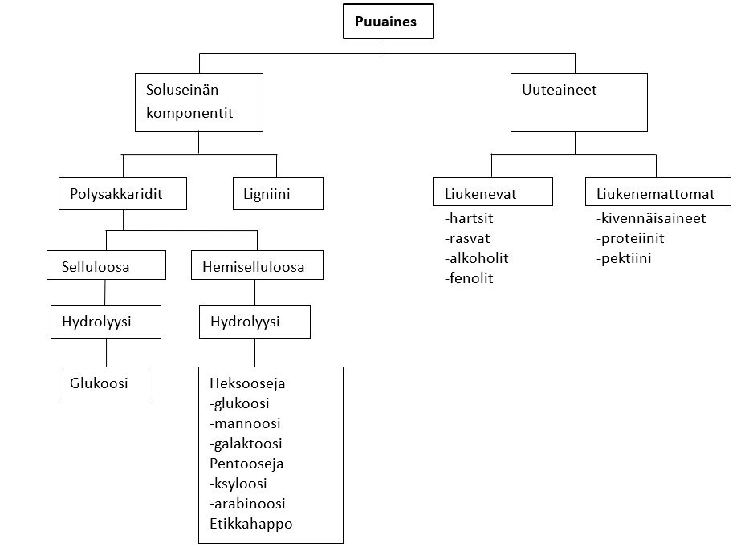
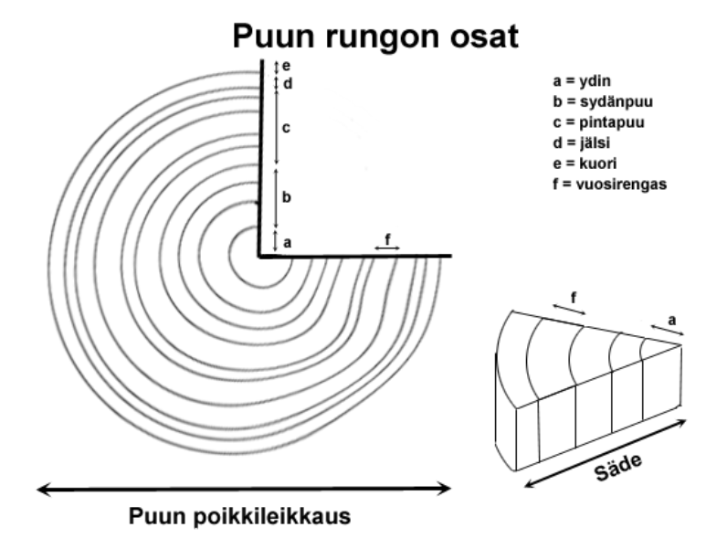
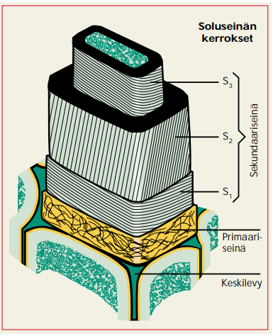

Puuaineksen rakenne
Contents
Puuaineksen rakenne#
Kemiallisena yhdisteinä puussa on eniten hiilihydraatteja, tarkemmin hemiselluloosaa ja selluloosaa. Lisäksi puuaineksessa on ligniiniä, uuteaineita (pihkaa) sekä pieniä määriä kivennäisaineita (tuhkaa, noin 0.5 %). Aineet jakaantuvat soluseinän komponentteihin ja uuteaineisiin oheisen kaavion mukaisesti.

Kuvan lähde: KnowPulp
Puun solukot#
Puut koostuvat erilaisista, valtaosin rungon suuntaisista, pitkulaisista soluista, jotka ovat yhteydessä toisiinsa huokosten avulla. Samankaltaiset solut muodostavat erikoistuneita solukkoja, joiden tehtävänä on mm. rungon tukeminen, nesteiden ja ravinteiden kuljetus, ravinnon varastointi ja puun kasvusta vastaaminen. Nämä solukot muodostavat yhdessä puiden eri osat: ytimen, puuaineksen, jälsikerroksen ja kuoren.

Kuvan lähde: KnowPulp
Ydin on 2-3 mm paksu ja se erottuu rungon ja oksien keskellä tummana juovana. Puuaines sijaitsee ytimen ympärillä ja se jakautuu sisempään sydänpuuhun ja ulompaan pintapuuhun. Rungon ympärillä pintapuun päällä on jälsikerros, joka sisältää eläviä kasvusoluja. Puun paksuus- ja pituuskasvu tapahtuvat jälsikerroksessa. Rungon uloin kerros on kuori, joka jakautuu sisempään vaaleaa elävää solukkoa sisäl-tävään nilakerrokseen ja ulompaan tummaa kuollutta solukkoa sisältävään kaarnaan. Nilakerroksen tehtävänä on kuljettaa yhteyttämistuotteita neulasista ja lehdistä rungon ja oksien jälsisolukkoon. Kaarnan tehtävänä on suojata puuta tuholaisilta, estää puun kuivuminen ja toimia lämmöneristeenä.
Puusolun soluseinä muodostuu kerroksista, jotka eroavat toisistaan rakenteensa, kemiallisen koostumuksensa ja syntyhistoriansa puolesta. Soluseinät sisältävät pääasiassa selluloosaa, hemiselluloosaa ja ligniiniä, ja lisäksi hieman uuteaineita. Nämä yhdisteet eivät ole jakautuneet tasaisesti kuitukerroksiin, joten eri kerrokset sisältävät näitä yhdisteitä eri suhteissa. Selluloosa muodostaa solulle eräänlaisen rungon, jota muut aineet täyttävät ja ympäröivät.

Kuvan lähde: Saranpää, P. Puun rakenne, ominaisuudet ja kasvu. Metsätieteen aikakauskirja 1/1997.
Soluseinästä voidaan erottaa seuraavat kerrokset: kyhmykerros, sekundääriseinä, primääriseinä ja välilamelli.
Kyhmykerrosta tavataan vain kuolleissa soluissa, joissa se sijaitsee soluontelossa soluseinän sisäpinnalla.
Sekundääriseinä koostuu pääasiassa mikrofibrilleistä eli pienistä selluloosakimpuista. Se jakautuu kolmeen kerrokseen: sisä-, keski- ja ulkokerrokseen. Kerrokset koostuvat pääasiassa lamelleista, joiden välissä sijaitsee hemiselluloosaa ja selluloosaa. Kerrosten välillä ei ole jyrkkää rajaa, sillä kerros muuttuu vähitellen toiseksi mikrofibrillien suuntautumisen muuttuessa.
Sekundääriseinän keskikerros (S2) on hyvin paksu, joten suurin osa selluloosasta sisältyy siihen. Keskikerroksen lamellien, jotka ovat muodostuneet kerrostuneista mikrofibrilleistä, välissä on myös ligniiniä.
Sekundääriseinän sisäkerrosta (S3) kutsutaan myös tertiääriseinäksi. Se on ohut ja koostuu oikealle ja vasemmalle kiertävistä mikrofibrilleistä.
Ulkokerros (S1) koostuu 2-6 lamellikerroksesta, joiden mikrofibrillit kiertävät loivasti sekä vasemmalle että oikealle.
Uloin soluseinän kerroksista on ohut primääriseinä (P), jonka muodostaa harva mikrofibrilliverkko. Se sisältää runsaasti amorfista selluloosaa ja ligniiniä.
Välilamelli eli keskilevy ei kuulu varsinaisesti soluseinään, sillä sen tehtävänä on toimia jakoseinänä uusien solujen välissä sekä liittää kuituja toisiinsa. Usein se kuitenkin luetaan yhdeksi solun osaksi.